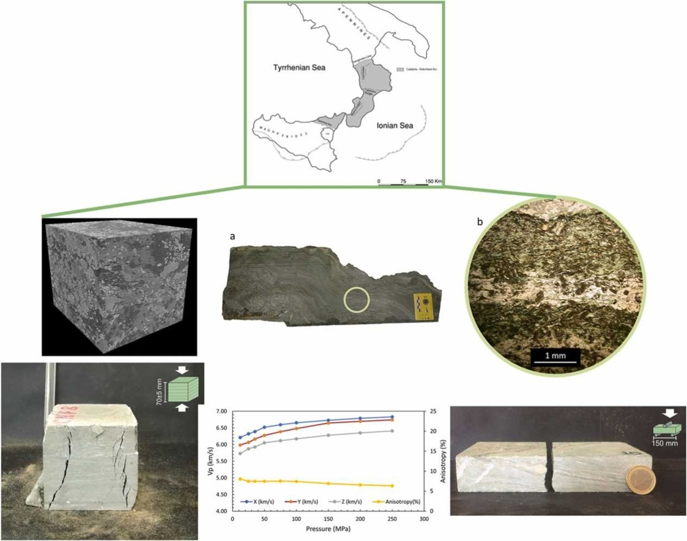
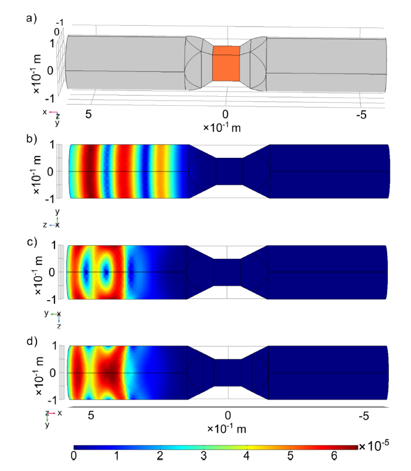
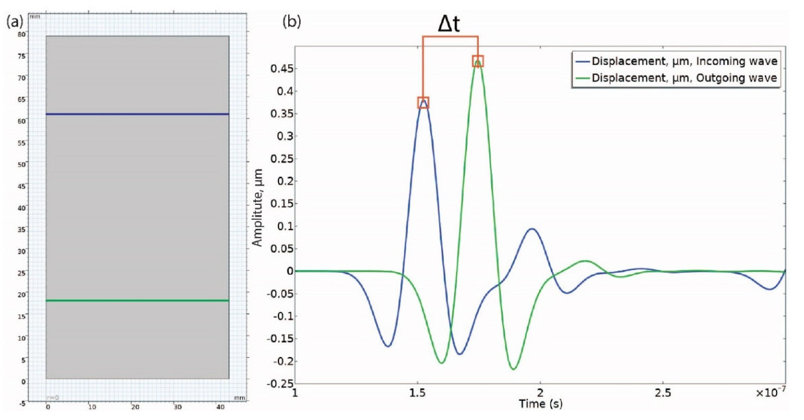
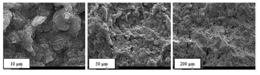

About
Dr.-Ing. Hem Bahadur Motra is a researcher and academic specializing in geomechanics, rock physics, and geotechnical engineering at the University of Kiel, Germany. His work advances the understanding of subsurface processes through innovative experimental and computational approaches.
He holds advanced degrees in civil and structural engineering and has completed extensive postdoctoral research in geotechnics, rock mechanics, and subsurface physics. As a research associate and head of the Geomechanics and Rock Mechanics Experimental Laboratory at Kiel University, he studies mechanical, thermal, and acoustic behavior of geomaterials under complex in situ conditions, bridging geosciences, civil engineering, and energy technologies.
He has authored more than 70 scientific publications, including peer-reviewed journal articles, conference papers, and technical reports. His work has appeared in leading international journals such as the International Journal of Rock Mechanics and Mining Sciences, Applied Energy, Rock Mechanics and Rock Engineering, Scientific Reports, and Geotechnical and Geological Engineering, reflecting sustained contributions across geomechanics, rock mechanics, rock physics, energy, and geotechnical engineering.
Education and Qualification
Employment
Teaching
Research Topics




Fellowships & Scholarships
Academic Memberships and Activities
Journal Editor and Reviewer Roles
Selected Publications
Presentations
Links
Contact
Email: hbmotra@gmail.com
Email: hem.motra@ifg.uni-kiel.de